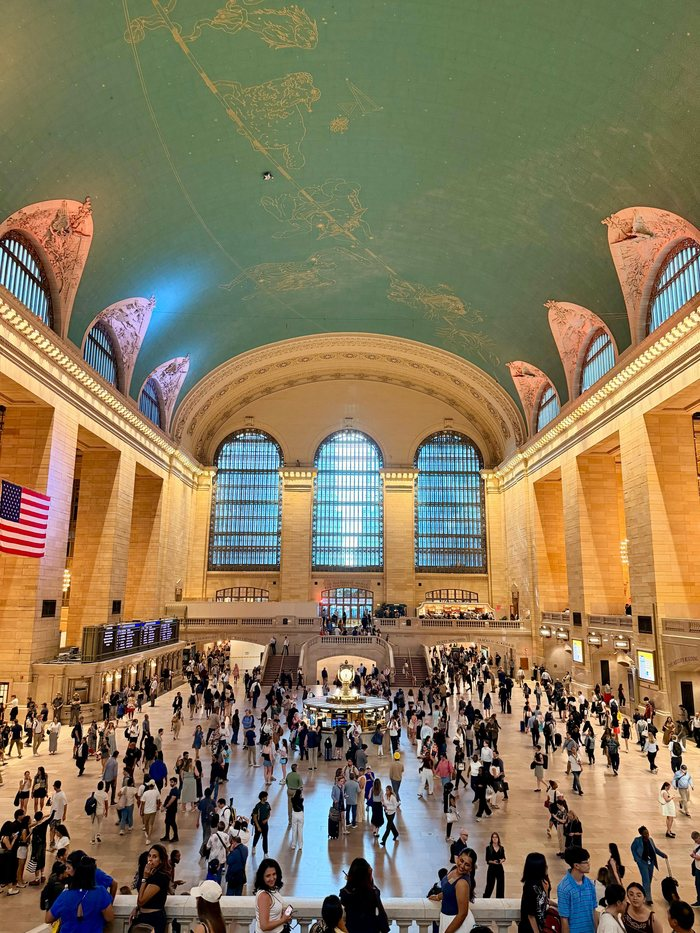
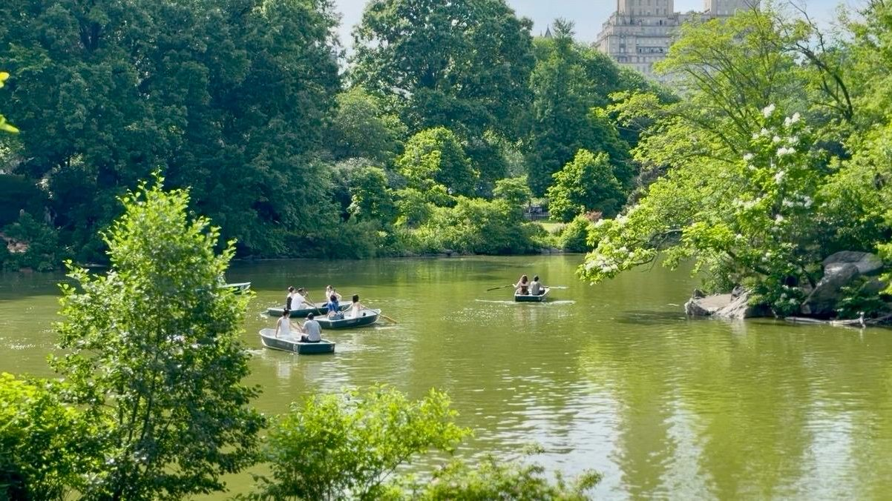
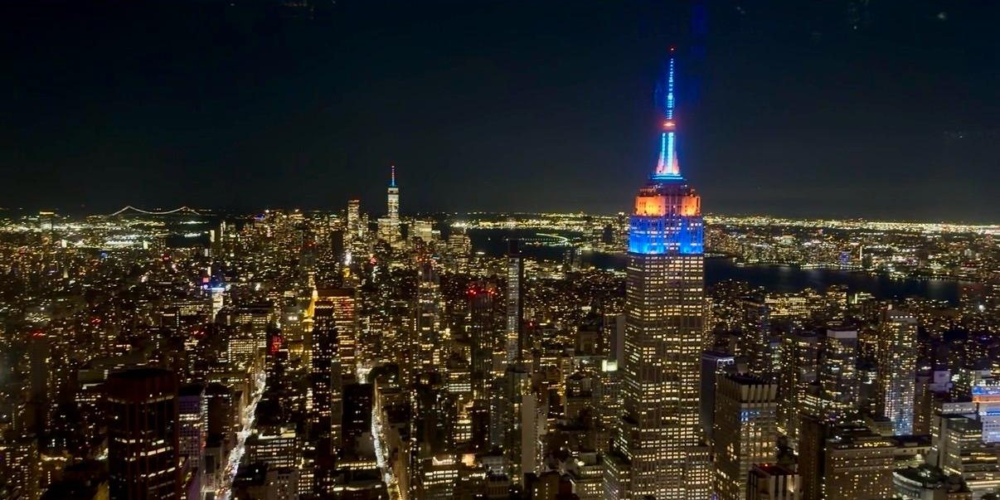
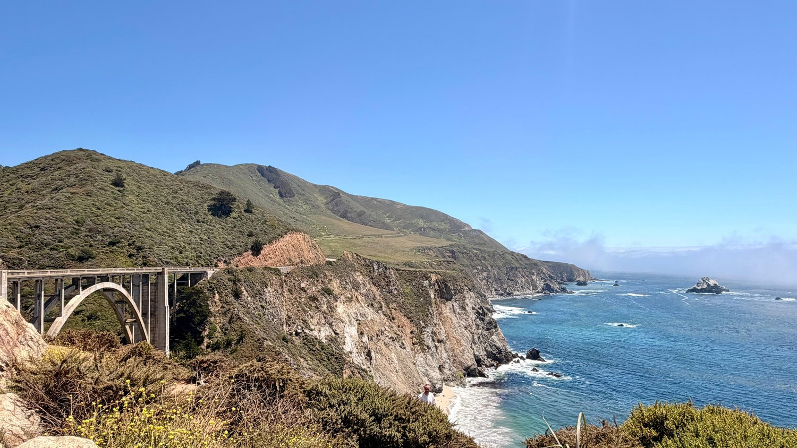
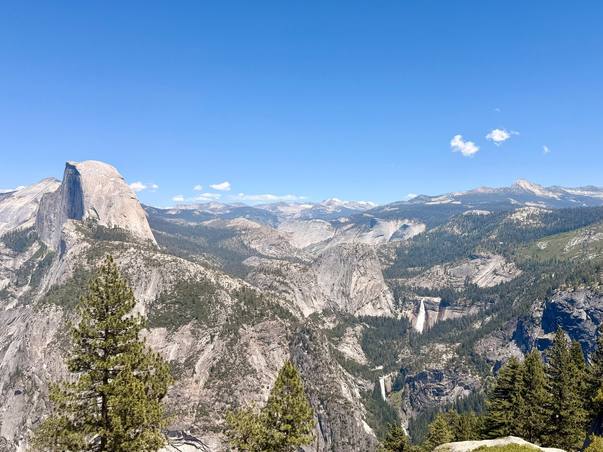
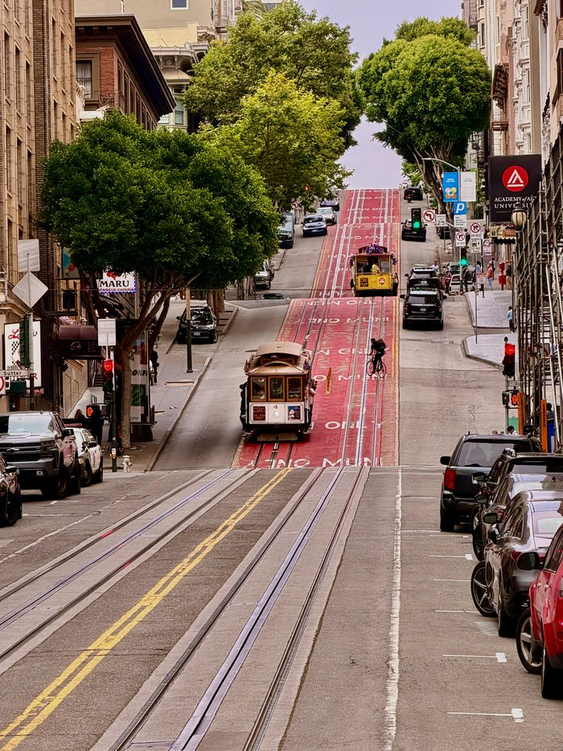
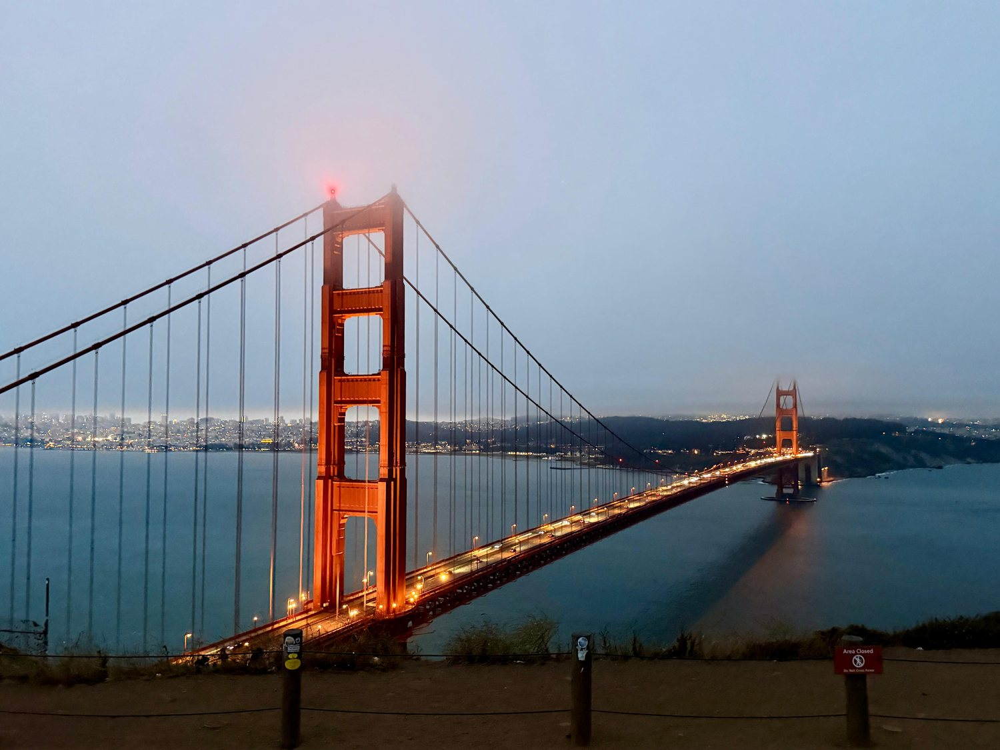

I landed at JFK with a spreadsheet. Every day mapped, every dollar budgeted, every attraction slotted into a window. Twenty-three days later, I flew out of SFO with a different kind of souvenir: proof that some of the best days of the trip were the ones where I threw the plan out.
Where the plan started to slip

New York was where it started to slip. Grand Central Station was the first place I felt it: hundreds of people crossing the same floor at the same second, all of them moving fast, all of them going somewhere specific, none of them looking at anyone else. I stood still in the middle of it for a minute just to see what would happen, and nothing did. Nobody noticed. That was the city's first lesson: you are one of millions here, and there's a strange comfort in that.
That same rush was everywhere, on the sidewalks, down in the subway, so when I stepped off the street and into Central Park it felt like a switch flipping. The noise, the elbow-to-elbow pace, all of it gone in the space of a few steps, replaced by people running or lying in the grass, kids chasing each other, ducks that clearly didn't answer to anyone's schedule. I'd given myself less than half a day there. I ended up spending most of the afternoon, and went back again on Day 3.

That's the second thing the city taught me, almost by accident. I had a list of things planned for those days, and I let a good number of them go without much guilt, because I was too busy being somewhere I didn't want to leave yet. By the second day I'd stopped fighting the city's pace altogether and started matching it instead: fast on the sidewalks, faster down into the subway, slow the second I hit the park. New York rushes harder than almost anywhere I've been, and it still taught me how to pause inside all of it.
On one of the last nights I went up to the top of One Vanderbilt. The whole city was lit up below me, window after window, further than I could see the end of it. I stood there a while just taking it in, and what got me was that it didn't stop anywhere. It just kept going, and where it couldn't go any further out, it went up. That's when it clicked for me, that New York had run out of space to spread a long time ago, so it started growing the only direction it had left. The limit didn't hold the city back. It's the reason the city looks the way it does.

The long way, on purpose
Three thousand miles to the west, California didn't have that problem. Where New York had run out of room and grew upward because of it, California had never run out of anything, and it showed in how little hurry the place seemed to be in. That difference was clearest on the drive down to Los Angeles.
There was a faster way to get there, a straight multi-lane interstate that would have taken six hours at eighty miles an hour. We took the coast instead: a single-lane road that wound along the cliffs for thirteen hours at forty miles an hour. Somewhere along the 17-Mile Drive I stopped the car just to look, a house perched at the edge of the cliffs, the ocean doing what it's done to that coastline for longer than anyone knows. Bixby Bridge came a little further down the road, one long curve of concrete holding up against a coastline it had no business surviving in one piece. By the time we reached LA, thirteen hours in, I didn't feel like I'd taken the long way. I felt like I'd finally taken the right one.

So high, and somehow still so low
Yosemite was the part of the trip I was least prepared for, and it taught me the most. I'm not, by any stretch, a fit person, and the Mist Trail to Vernal Fall was 7.1 miles round trip with close to 2,000 feet of elevation gain, five and a half hours of climbing, most of it with my legs telling me to stop.
Partway up, at around 1,750 feet, I stopped and looked across at Half Dome, still standing taller than me, further away than it looked, unmoved by any of the climbing I'd just done. I was so high, and somehow still so low. For a moment all I could hear was the wind and my own heartbeat. At the top, the valley opened up in every direction: granite mountains as far as I could see, pine and oak covering the slopes, waterfalls that from that distance looked like thin white threads dropped down the rock face. That night, under a sky with more stars than I remembered a sky could hold, I felt like a very small piece of something enormous.

Built right the first time
Back down from the mountains, the last city on the trip pulled me in the opposite direction. San Francisco packs more into less forgiving ground than any city I've walked. It sits on hills so steep that some blocks are less a walk than a climb, and yet the streets run straight up them anyway, as if the city refused to be talked out of the idea.

The cable cars are what made that stubbornness work. At the Cable Car Museum I stood over the machinery that still runs the whole system, thick steel cables winding through giant wheels under the floor, the same basic design from the 1870s, still hauling carts up slopes nothing else could climb. Later I rode one, gripping the pole on an open side as it clanked up a hill I wouldn't have wanted to walk, and it hit me that this wasn't a museum piece kept alive for tourists. It was still the best answer anyone had found. Some things get built right the first time and simply never need replacing.
Nothing here went as planned
On my last evening, I stood at Battery Spencer in a wind cold enough to cut through everything I was wearing, and looked back at the city I'd spent days walking through. From up there I could see all of it at once, the old landmarks, the fishermen's piers, the bridge, and the modern skyline behind it, sitting in a single frame.

It was hard to believe all of it had started as a sleepy outpost of a few hundred people. A gold rush turned it into a boomtown and a working port almost overnight. An earthquake leveled most of what that built. It came back anyway, and eventually became the center of the tech world. Nobody two hundred years ago could have drawn a straight line through any of it. Standing there, it struck me that none of it had gone as planned — and it hadn't needed to.
If this trip taught me one thing, it's that the plan was always going to be the least important part of it. New York proved that even when the plan runs out of room, you keep going. California proved that when the plan falls apart, it's not the end of anything — there's always something else worth doing, and it can turn out just as good.
I finished the trip $223 under budget and nowhere near the itinerary I landed with — and it still turned out to be everything I could have wanted.